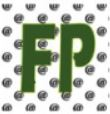

!BIENVENIDO A TODOFP!
0ct. 10, 2011

FP a distancia. Está oferta está dirigida especialmenta a aquellas personas que, por diferentes
razones (no solo laborales), no puedan cursar en los centros educativos y en el horario presencial,
la Formación Profesional. Por tanto, mayoritariamente será el colectivo de personas
adultas el destinatario de esta modalidad de enseñanza. Toda la información desde la web FP online ¡¡¡Matriculate¡¡¡.